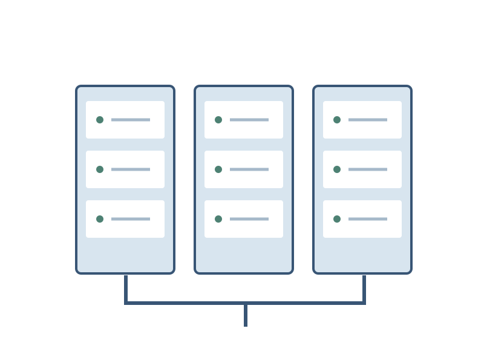

Static site
HTML, CSS, scripts and images served as files. No application process or database is required for the site itself.
Small surfaceA practical hosting fieldbook for static pages and modest projects. Understand the moving parts before choosing a plan.

HTML, CSS, scripts and images served as files. No application process or database is required for the site itself.
Small surfaceA running process and its dependencies need updates, health checks and a recovery plan.
More moving partsKeep a copy separate from the machine you are trying to recover. Practise a restore before a failure.
Recoverable